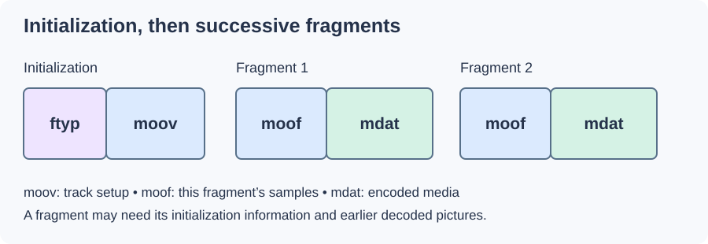

Fragmented MP4
A conventional MP4 can describe the samples of a complete movie in tables. Fragmented MP4 describes newly available groups of samples as the presentation proceeds. A writer can commit each group before the whole recording exists.

Common conceptual layout. Optional boxes, size differences, and additional fragments are omitted.
Initialization supplies track identities, time scales, and codec setup. Successive moof boxes describe movie fragments; accompanying mdat boxes hold their encoded media. This divides global track setup from information about the current samples.
Read three samples from a fragment
Take an invented fragment for a video track whose clock uses 30,000 ticks per second. Let its base decode time be 60,000 ticks. Each of three samples lasts 1,000 ticks, and their byte sizes are 800, 500, and 650. For this example there is no picture reordering, so the presentation offsets are zero.
Assume a 120-byte moof followed by an eight-byte mdat header. A sample run uses a data offset of 128 from the moof's beginning with movie-fragment-relative addressing.
| Sample | Decode time | Time in seconds | Byte start relative to moof |
|---|---|---|---|
| 1 | 60,000 | 2.0000 | 128 |
| 2 | 61,000 | 2.0333… | 928 |
| 3 | 62,000 | 2.0666… | 1,428 |
The reader obtains the time base from initialization, the base decode time from the track fragment, and durations/sizes from the sample run or its declared defaults. Cumulative durations produce the next decode positions; cumulative sizes produce the next byte addresses.
The three media samples total 1,950 bytes. The fragment ends at relative byte 2,078 in this simplified layout, and its next decode time is 63,000 ticks, or 2.1 seconds. This is concrete work the fragment description performs: it turns one group's bytes into identified, scheduled samples.
Real fragments can contain multiple tracks and runs, defaults, composition offsets, and additional boxes. The reader follows the applicable fields rather than assuming every fragment uses these invented sizes.
Initialization and restart are separate dependencies
A media-only segment needs the associated track setup. Even after setup is available, a video sample may predict from an earlier picture. Beginning at a suitable random access point supplies a usable decoding restart; storing a moof in front of arbitrary samples does not itself create one.
The browser Media Source Extensions byte-stream note defines initialization and media-segment requirements for that path. HLS defines another fMP4 carriage convention. Those requirements build on ISO BMFF rather than describing every possible fragmented file arrangement.
Stored fragments and delivered segments
Fragments can occupy one physical file or several resources. A streaming playlist can identify separate initialization and media resources; another reader can traverse successive moof/mdat pairs in one file. Fragmentation is the internal description method, while the delivery system chooses how those groups are obtained.
In an Emby session, the original library file can be read into such an output arrangement. It is the delivered initialization and fragments the app follows, even if the source was MKV or a conventional MP4.
Fast start solves another initialization problem by moving one conventional movie description early. Fragmentation instead keeps adding group descriptions as samples become known. That distinction explains its usefulness for ongoing recording and segmented delivery.